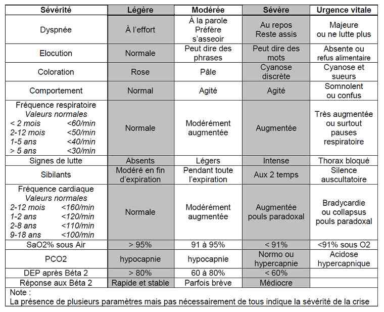
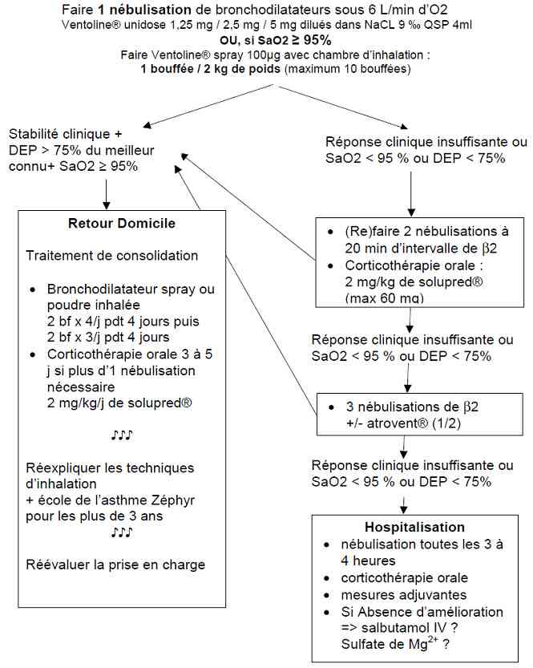
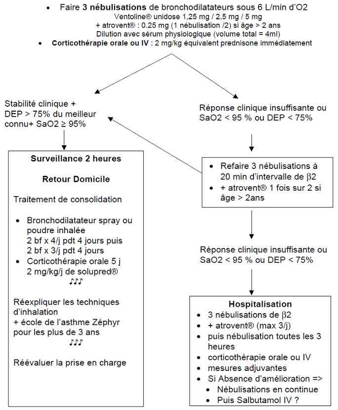

Bienvenue Sur Medical Education
Asthme aigu de l'enfant
EnfantSpécialité : pediatrie / pneumologie /
Présentation clinique / CIMU
SIGNES FONCTIONNELS
-
Dyspnée
CONTEXTE
Terrain
- Atopique, allergique
- Milieu défavorisé
Antécédents
- Crises antérieures
- ATCD d'hospitalisation (salle, réanimation)
Traitement
- Traitement de fond de l'asthme
- Recherche d'un traitement récent (surtout allergique)
Facteurs de gravité
- ATCD d'hospitalisation en réanimation
- Durée d'évolution des symptômes
- Consommation thérapeutique
- Contexte familial peu fiable
- Crise ressentie comme inhabituelle
- Crise déclenchée par l'alimentation
EXAMEN CLINIQUE
Pulmonaire
- FR
- Signes de lutte
- Sibilants
- Thorax bloqué en inspiration
- Difficulté à parler
- Cyanose
Cardiovasculaire
- Tachycardie
Neurologique
- Agitation
- Somnolence
SIGNES PARACLINIQUES SIMPLES
DEP (Peak Flow) chez un enfant formé à son utilisation
- A faire en l'absence de bronchospasme intense
- Généralement à partir de l'âge de 6-7 ans
- 3 mesures de suite, retenir la meilleure
- La courbe des valeurs normales de DEP est indicative, mais la référence est le meilleur chiffre connu au domicile à l'état stable
Signes paracliniques
-
Evaluation de la gravité d’une crise d’asthme
 _773 Tableau Evaluation de la gravité d'une crise d'asthme
Diagnostic étiologique
-
Infection respiratoire virale (cause la plus fréquente)
-
Exposition à un allergène (poils de chat, aspirine, coton, détergent, graines...)
-
Exercice physique
-
Air froid et sec, air pollué
-
Changements de temps
-
Taux d'hygrométrie important
Diagnostic différentiel
-
Anaphylaxie
-
Bronchiolite
-
Ingestion ou inhalation de corps étranger
-
Syndrome d'hyperventilation, panique
-
Pneumonie, bronchite
Traitement
TRAITEMENT PREHOSPITALIER / INTRAHOSPITALIER
Diagnostic différentiel
- Anaphylaxie
- Bronchiolite
- Ingestion ou inhalation de corps étranger
- Syndrome d'hyperventilation, panique
- Pneumonie, bronchite
Traitement
TRAITEMENT PREHOSPITALIER / INTRAHOSPITALIER
Crise d'asthme modérée
-
Faire 1 nébulisation de bronchodilatateurs sous 3-6 L/min d'O2
- Ventoline® unidose 1,25 mg / 2,5 mg / 5 mg dilués dans NaCl 0,9% QSP 4mL
-
ou, si SpO2 = 95%, faire Ventoline® spray 100µg avec chambre d'inhalation :
- 1 bouffée / 2 kg de poids (maximum 10 bouffées)
-
Si stabilité clinique + DEP > 75% du meilleur connu + SpO2 = 95% :
- le patient peut revenir à domicile
-
Si réponse clinique insuffisante ou SpO2 < 95 % ou DEP < 75% :
- (re)faire 2 nébulisations à 20 min d'intervalle de béta2
- corticothérapie orale : 2 mg/kg de Solupred® (max 60 mg)
-
Si réponse clinique insuffisante ou SpO2 < 95 % ou DEP < 75% :
- 3 nébulisations de béta2 ± Atrovent® (1/2)
-
Si réponse clinique insuffisante ou SpO2 < 95 % ou DEP < 75% :
- nébulisation toutes les 3 à 4 heures
- corticothérapie orale
-
Si absence d'amélioration :
- sulfate de magnésium (SO4Mg)
Crise d'asthme sévère
-
Faire 3 nébulisations de bronchodilatateurs sous 3-6 L/min d'O2
- - Ventoline® unidose 1,25 mg / 2,5 mg / 5 mg + Atrovent® : 0,25 mg (1 nébulisation/2) si âge > 2 ans
- - dilution avec NaCl 0,9% (volume total = 4mL)
- Corticothérapie orale ou IV : 2 mg/kg équivalent prednisone immédiatement
- Si stabilité clinique + DEP > 75% du meilleur connu + SpO2 > ou = 95% : surveillance 2 heures puis retour à domicile
-
Si réponse clinique insuffisante ou SpO2 < 95 % ou DEP < 75% :
- refaire 3 nébulisations à 20 min d'intervalle de béta2 + Atrovent® 1 fois sur 2 si âge > 2ans
-
Si réponse clinique insuffisante ou SpO2 < 95 % ou DEP < 75% :
- 3 nébulisations de béta2 + Atrovent® (max 3/j) puis nébulisation toutes les 3 heures
- corticothérapie orale ou IV
- Si absence d'amélioration => nébulisations en continue puis SO4Mg IV
MEDICAMENTS
Bronchodilatateurs de courte durée d'action
- Ventoline® spray : 100 µg/bouffée + chambre d'inhalation : Babyhaler®, vortex®
-
Béta2 mimétiques en suspension pour aérosol :
- Ventoline® unidose de 2,5 mL dosée à 1,25 mg de 0-15 kg; 2,5 mg de 16-33 kg; 5 mg > 33 kg
- Bricanyl® 2mL = 5 mg (1 gtte/kg, mini 10, maxi une ampoule)
- Bricanyl® injectable SC : 1 mL = 0,5 mg (0,1-0,2 mL/10 kg si > 2ans)
-
Salbutamol fort IV : 5 mL = 5 mg = 5000 µg (si crise sévère résistante aux nébulisations et SO4Mg)
- posologie initiale = 0,5 à 1 µg/kg/min
- posologie augmentée par palier de 0,5 µg/kg/min en fonction de la réponse (posologie maximale = 2,5 µg/kg/min)
-
indications :
- hypercapnie ou signes d'épuisement respiratoire
- non réponse au traitement d'attaque bien conduit
- oxygénodépendance > 6 L/min en masque haute concentration
-
Anticholinergiques :
- Atrovent® enfant (2mL = 0,25 mg, adulte 2 mL = 0,5 mg)
- peut renforcer l'action des béta2, à utiliser dans les crises sévères et chez les enfants de plus de 2 ans
- rythme : 1 nébulisation/2 puis max 3 par 24 heures
Corticothérapie = 2 mg/kg/j équivalent prednisone maximum 60 à 80 mg
-
Solupred® : 2 mg/kg/j en 1 à 2 prises orales par jour
- galénique : comprimé à 5 mg et 20 mg, solution buvable à 1 mg/mL
-
Célestène® oral (aucune étude n'a reconnu son efficacité) :
- 20 gttes/kg/j = 1,3 mg/kg/j équivalent prednisone
- 30 gttes/kg/j = 2,0 mg/kg/j équivalent prednisone
-
Solumédrol® IV :
- dose de charge de 2 mg/kg non obligatoire, tenir compte de la dose orale déjà donnée puis 0,5mg/kg/6 heures en IVL, dose maximale 60-80 mg/j
Traitements adjuvants
- Oxygénothérapie objectif SpO2 > 94%
- Hydratation 2 L/m2/j par soluté B26 ou polyionique G5% (NaCl = 4 g/L ou 68,4 mmol/L)
-
KCl (le salbutamol peut entraîner une hypokaliémie) :
- 1 litre de B26 apporte 2 g de KCl soit 26,8 mmol
- 100 mL/kg/j de B26 apportent 2,7 mmol/kg/j de K+
- si nécessaire, ajouter 1 à 2 mmol/kg de K+ dans la perfusion de 24h en utilisant du KCl à 7,46 % (1 mL = 1 mmol)
- Mopral® (1 mg/kg/j) si Solumédrol® IV (1 mg/kg/j, maxi 20 mg) et/ou salbutamol IV
- Kinésithérapie respiratoire pas en urgence et selon contexte
- Antibiothérapie si infection fortement suspectée, documentée (amoxicilline ou josamycine, action sur pneumocoque et/ou mycoplasme)
Surveillance
CLINIQUE
-
Scope avec SpO2, FR et FC en continu
-
Coloration, sueurs, angoisse, PA
-
Débit d'oxygène, étanchéité du système
-
Nébulisation en position assise
-
Signes de lutte et amplitude thoracique
PARACLINIQUE
-
Ionogramme sanguin (kaliémie)
Devenir / orientation
CRITERES DE SORTIE
-
DEP > 60 %
-
SpO2 > 94%
-
FR normale
-
Absence de signes de lutte
-
Pour les enfants en âge de parler : pas de sensation de dyspnée
-
Bonne compréhension des parents des signes de gravité et du traitement
-
Disponibilité des médicaments
-
Possibilité de retour rapide à l'hôpital si besoin
-
Stable 1 heure après la dernière nébulisation
ORDONNANCE DE SORTIE
-
Bronchodilatateur spray ou poudre inhalée :
-
2 bouffées x 4/j pendant 4 jours puis 2 bouffées x 3/j pendant 4 jours
-
Corticothérapie orale 3 à 5 j si plus d'1 nébulisation nécessaire :
-
2 mg/kg/j de Solupred®
RECOMMANDATIONS DE SORTIE
-
Réexpliquer les techniques d'inhalation + école de l'asthme pour les plus de 3 ans
Algorithme
-
Algorithme : crise d'asthme modérée chez l'enfant
Devenir / orientation
CRITERES DE SORTIE
- DEP > 60 %
- SpO2 > 94%
- FR normale
- Absence de signes de lutte
- Pour les enfants en âge de parler : pas de sensation de dyspnée
- Bonne compréhension des parents des signes de gravité et du traitement
- Disponibilité des médicaments
- Possibilité de retour rapide à l'hôpital si besoin
- Stable 1 heure après la dernière nébulisation
ORDONNANCE DE SORTIE
-
Bronchodilatateur spray ou poudre inhalée :
- 2 bouffées x 4/j pendant 4 jours puis 2 bouffées x 3/j pendant 4 jours
-
Corticothérapie orale 3 à 5 j si plus d'1 nébulisation nécessaire :
- 2 mg/kg/j de Solupred®
RECOMMANDATIONS DE SORTIE
- Réexpliquer les techniques d'inhalation + école de l'asthme pour les plus de 3 ans
Algorithme
-
Algorithme : crise d'asthme modérée chez l'enfant
 _774 Algorithme Algorithme : crise d'asthme modérée chez l'enfant
- Algorithme : crise d'asthme sévère chez l'enfant
 _775 Algorithme Algorithme : crise d'asthme sévère chez l'enfant
Auteur(s) : Jean-Christophe MERCIER